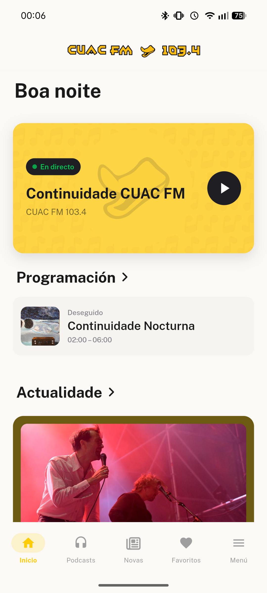
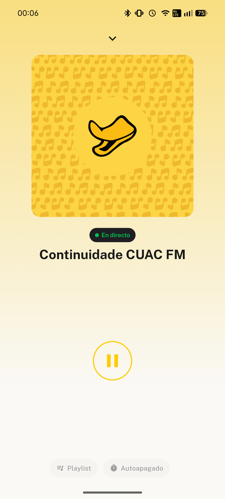
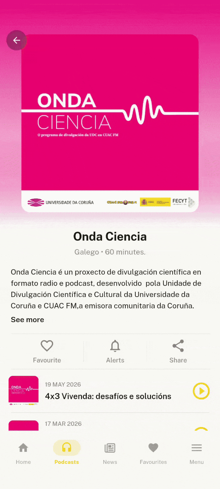

Ti marcas a programación
Engade episodios de distintos programas nunha soa lista de reprodución. Sen interrupcións, na orde que ti elixas e escoita cando queiras.
Escoita CUAC FM en directo, descubre podcasts únicos e conecta cunha emisora feita pola cidadanía. Sen publicidade. Onde queiras, cando queiras.
Descargar de balde →
Accede á emisión en directo cun só toque e acompaña a programación de CUAC FM esteas onde esteas. Consulta que programa está en antena agora mesmo e o que vén a continuación.

Recupera episodios cando che apeteza. Música, cultura, humor, sociedade, deporte e voces que non atoparás noutra radio.
Engade episodios de distintos programas nunha soa lista de reprodución. Sen interrupcións, na orde que ti elixas e escoita cando queiras.
Marca os teus programas favoritos e accede a eles de forma instantánea. Non perdas ningún episodio do que máis che importa.

Activa alertas de episodios para os programas que máis che gustan. Cando se publique un novo episodio, recibirás unha notificación no teu móbil.
Todo o que necesitas nunha app limpa, rápida e gratuíta.
Sen anuncios, sen subscrición. Radio comunitaria de verdade.
CUAC FM sempre en antena, sen cortes nin interrupcións. A mellor música coidadosamente seleccionada para ti.
Arquivo completo de todos os programas de CUAC FM.
Crea e xestiona a túa lista de episodios favoritos.
Garda os programas que máis che gustan para atopalos ao instante.
Consulta que programa hai en cada momento da semana.
Escolle os programas dos que queres estar ao día e recibe unha notificación cada vez que se publique un novo episodio.
Es genial que una radio local tenga una app para los directos y todos los episodios en diferido. 10/10.
Buenísima música y contenido. Poco conocida, hay que dar difusión a iniciativas así. ¡Gracias!
Una fantástica app donde puedes escuchar cualquier programa de CUAC FM en directo o podcast, desde cualquier lugar. Muy intuitiva.
Gran mellora con respecto á versión anterior. E moitos programas que pagan a pena.
La aplicación funciona perfectamente, es cómoda, práctica y consume pocos recursos.
Trata temas cercanos, con música muy buena. La escucho con frecuencia por los temas que tratan. ¡Gracias!
Moi boa aplicación e mellor emisora!!
Es genial que una radio local tenga una app para los directos y todos los episodios en diferido. 10/10.
Buenísima música y contenido. Poco conocida, hay que dar difusión a iniciativas así. ¡Gracias!
Una fantástica app donde puedes escuchar cualquier programa de CUAC FM en directo o podcast, desde cualquier lugar. Muy intuitiva.
Gran mellora con respecto á versión anterior. E moitos programas que pagan a pena.
La aplicación funciona perfectamente, es cómoda, práctica y consume pocos recursos.
Trata temas cercanos, con música muy buena. La escucho con frecuencia por los temas que tratan. ¡Gracias!
Moi boa aplicación e mellor emisora!!
Descarga gratuíta para Android e iOS.